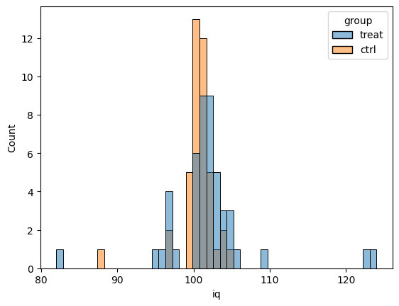
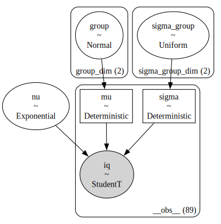
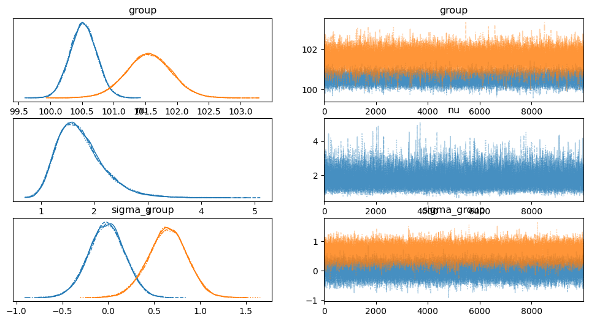
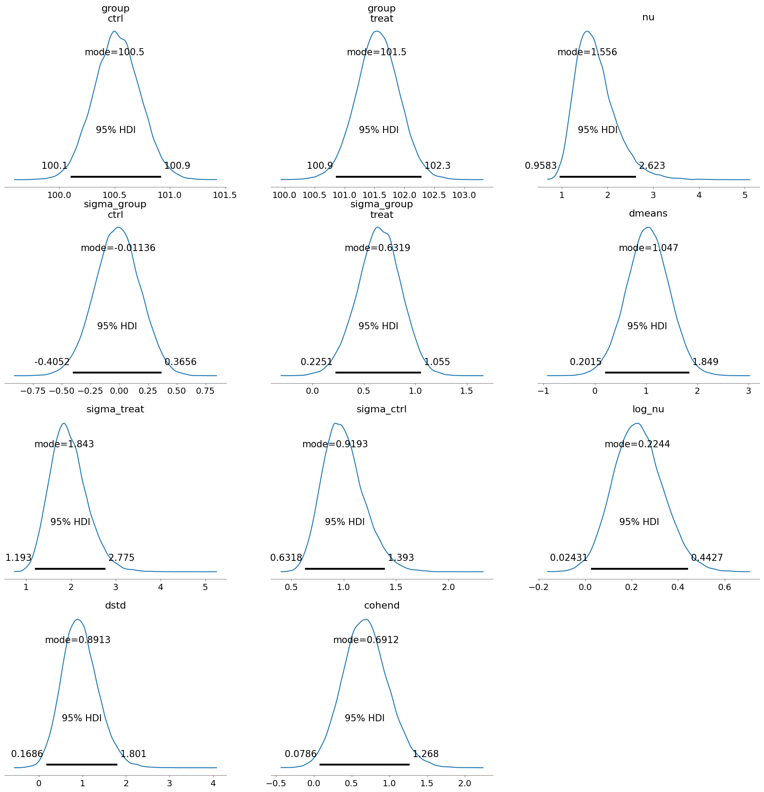
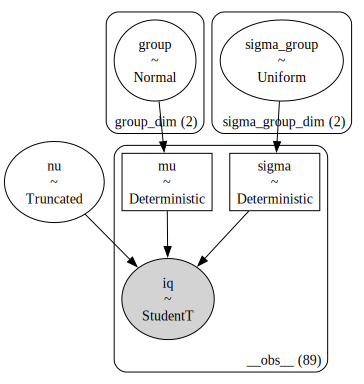
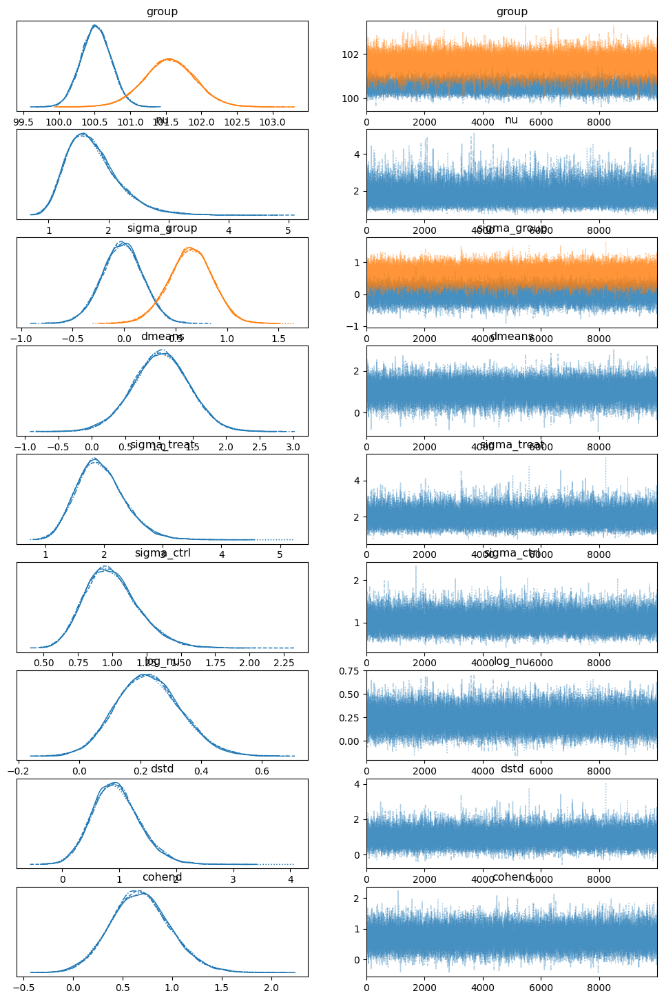
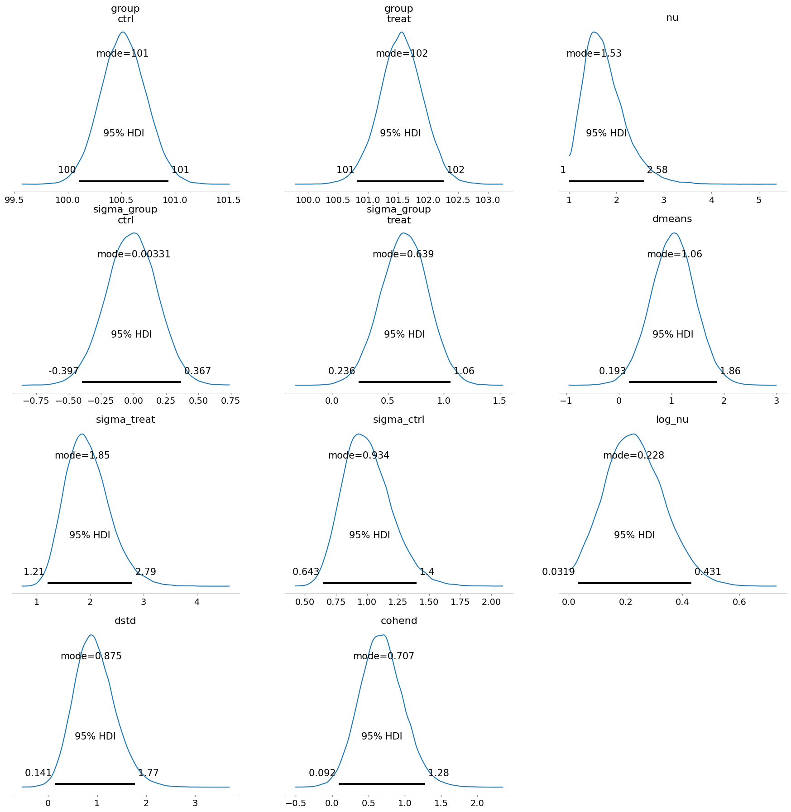
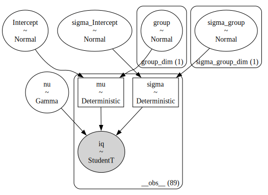
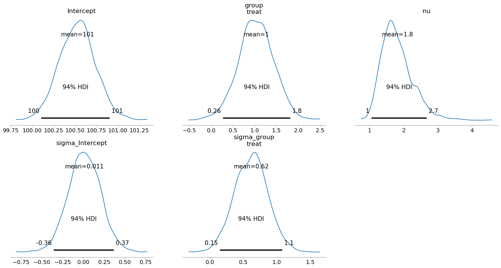
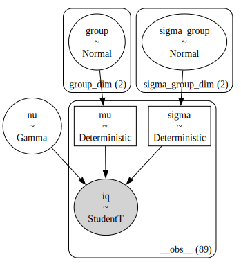

Analysis of the iqs2 dataset#
We’ll now use from original BEST paper
Data taken from BESTexample-original.R in BEST.zip
via https://web.archive.org/web/20170708173718/https://www.indiana.edu/~kruschke/BEST/
Steps following Matti Vuorre’s blog post see also src notebook.
import arviz as az
import numpy as np
import pandas as pd
import seaborn as sns
Data#
iqs2 = pd.read_csv("../../datasets/exercises/iqs2.csv")
iqs2.groupby("group").describe()
---------------------------------------------------------------------------
FileNotFoundError Traceback (most recent call last)
Cell In[2], line 1
----> 1 iqs2 = pd.read_csv("../../datasets/exercises/iqs2.csv")
2 iqs2.groupby("group").describe()
File /opt/hostedtoolcache/Python/3.10.19/x64/lib/python3.10/site-packages/pandas/io/parsers/readers.py:1026, in read_csv(filepath_or_buffer, sep, delimiter, header, names, index_col, usecols, dtype, engine, converters, true_values, false_values, skipinitialspace, skiprows, skipfooter, nrows, na_values, keep_default_na, na_filter, verbose, skip_blank_lines, parse_dates, infer_datetime_format, keep_date_col, date_parser, date_format, dayfirst, cache_dates, iterator, chunksize, compression, thousands, decimal, lineterminator, quotechar, quoting, doublequote, escapechar, comment, encoding, encoding_errors, dialect, on_bad_lines, delim_whitespace, low_memory, memory_map, float_precision, storage_options, dtype_backend)
1013 kwds_defaults = _refine_defaults_read(
1014 dialect,
1015 delimiter,
(...)
1022 dtype_backend=dtype_backend,
1023 )
1024 kwds.update(kwds_defaults)
-> 1026 return _read(filepath_or_buffer, kwds)
File /opt/hostedtoolcache/Python/3.10.19/x64/lib/python3.10/site-packages/pandas/io/parsers/readers.py:620, in _read(filepath_or_buffer, kwds)
617 _validate_names(kwds.get("names", None))
619 # Create the parser.
--> 620 parser = TextFileReader(filepath_or_buffer, **kwds)
622 if chunksize or iterator:
623 return parser
File /opt/hostedtoolcache/Python/3.10.19/x64/lib/python3.10/site-packages/pandas/io/parsers/readers.py:1620, in TextFileReader.__init__(self, f, engine, **kwds)
1617 self.options["has_index_names"] = kwds["has_index_names"]
1619 self.handles: IOHandles | None = None
-> 1620 self._engine = self._make_engine(f, self.engine)
File /opt/hostedtoolcache/Python/3.10.19/x64/lib/python3.10/site-packages/pandas/io/parsers/readers.py:1880, in TextFileReader._make_engine(self, f, engine)
1878 if "b" not in mode:
1879 mode += "b"
-> 1880 self.handles = get_handle(
1881 f,
1882 mode,
1883 encoding=self.options.get("encoding", None),
1884 compression=self.options.get("compression", None),
1885 memory_map=self.options.get("memory_map", False),
1886 is_text=is_text,
1887 errors=self.options.get("encoding_errors", "strict"),
1888 storage_options=self.options.get("storage_options", None),
1889 )
1890 assert self.handles is not None
1891 f = self.handles.handle
File /opt/hostedtoolcache/Python/3.10.19/x64/lib/python3.10/site-packages/pandas/io/common.py:873, in get_handle(path_or_buf, mode, encoding, compression, memory_map, is_text, errors, storage_options)
868 elif isinstance(handle, str):
869 # Check whether the filename is to be opened in binary mode.
870 # Binary mode does not support 'encoding' and 'newline'.
871 if ioargs.encoding and "b" not in ioargs.mode:
872 # Encoding
--> 873 handle = open(
874 handle,
875 ioargs.mode,
876 encoding=ioargs.encoding,
877 errors=errors,
878 newline="",
879 )
880 else:
881 # Binary mode
882 handle = open(handle, ioargs.mode)
FileNotFoundError: [Errno 2] No such file or directory: '../../datasets/exercises/iqs2.csv'
sns.histplot(data=iqs2, x="iq", hue="group");

BEST model 1: un-shifted exponential prior on nu#
import bambi as bmb
import pymc as pm
#######################################################
formula1 = bmb.Formula("iq ~ 0 + group",
"sigma ~ 0 + group")
iqs_mean, iqs_std = iqs2["iq"].mean(), iqs2["iq"].std()
sigma_low = np.log(iqs_std / 1000)
sigma_up = np.log(iqs_std * 1000)
priors1 = {
"group": bmb.Prior("Normal", mu=iqs_mean, sigma=1000*iqs_std),
"sigma": {"group": bmb.Prior("Uniform", lower=sigma_low, upper=sigma_up)},
"nu": bmb.Prior("Exponential", lam=1/29),
}
# Build model
mod1 = bmb.Model(formula=formula1,
family="t",
priors=priors1,
data=iqs2)
mod1
WARNING (pytensor.tensor.blas): Using NumPy C-API based implementation for BLAS functions.
Formula: iq ~ 0 + group
sigma ~ 0 + group
Family: t
Link: mu = identity
sigma = log
Observations: 89
Priors:
target = mu
Common-level effects
group ~ Normal(mu: 101.1798, sigma: 4744.7622)
Auxiliary parameters
nu ~ Exponential(lam: 0.0345)
target = sigma
Common-level effects
sigma_group ~ Uniform(lower: -5.3507, upper: 8.4648)
mod1.build()
mod1.backend.model
\[\begin{split}
\begin{array}{rcl}
\text{nu} &\sim & \operatorname{Exponential}(f())\\\text{group} &\sim & \operatorname{Normal}(101,~4.74e+03)\\\text{sigma\_group} &\sim & \operatorname{Uniform}(-5.35,~8.46)\\\text{mu} &\sim & \operatorname{Deterministic}(f(\text{group}))\\\text{sigma} &\sim & \operatorname{Deterministic}(f(\text{sigma\_group}))\\\text{iq} &\sim & \operatorname{StudentT}(\text{nu},~\text{mu},~\text{sigma})
\end{array}
\end{split}\]
mod1.graph()

idata1 = mod1.fit(draws=10000)
Auto-assigning NUTS sampler...
Initializing NUTS using jitter+adapt_diag...
Multiprocess sampling (4 chains in 4 jobs)
NUTS: [nu, group, sigma_group]
Sampling 4 chains for 1_000 tune and 10_000 draw iterations (4_000 + 40_000 draws total) took 4 seconds.
az.plot_trace(idata1);

# Calculate relevant quantities
# Difference posterior of the difference between means
post1 = idata1["posterior"]
post1_dmeans = post1["group"][:,:,1] - post1["group"][:,:,0]
# ALT. post1["group"].sel(group_dim="treat") - post1["group"].sel(group_dim="ctrl")
post1["dmeans"] = post1_dmeans
# Sigmas from log-sigmas
post1["sigma_treat"] = np.exp(post1["sigma_group"][:,:,1])
post1["sigma_ctrl"] = np.exp(post1["sigma_group"][:,:,0])
# # log-nu from nu
post1["log_nu"] = np.log10(post1["nu"])
# Difference in standard deviations
post1["dstd"] = post1["sigma_treat"] - post1["sigma_ctrl"]
# Effect size
var_pooled = (post1["sigma_treat"]**2 + post1["sigma_ctrl"]**2) / 2
post1["cohend"] = post1["dmeans"] / np.sqrt(var_pooled)
import arviz as az
az.summary(idata1, kind="stats", hdi_prob=0.95)
| mean | sd | hdi_2.5% | hdi_97.5% | |
|---|---|---|---|---|
| group[ctrl] | 100.522 | 0.210 | 100.103 | 100.921 |
| group[treat] | 101.551 | 0.364 | 100.856 | 102.287 |
| nu | 1.744 | 0.450 | 0.958 | 2.623 |
| sigma_group[ctrl] | -0.019 | 0.197 | -0.405 | 0.366 |
| sigma_group[treat] | 0.644 | 0.212 | 0.225 | 1.055 |
| dmeans | 1.030 | 0.420 | 0.201 | 1.849 |
| sigma_treat | 1.948 | 0.414 | 1.193 | 2.775 |
| sigma_ctrl | 1.001 | 0.198 | 0.632 | 1.393 |
| log_nu | 0.228 | 0.107 | 0.024 | 0.443 |
| dstd | 0.947 | 0.419 | 0.169 | 1.801 |
| cohend | 0.685 | 0.304 | 0.079 | 1.268 |
az.plot_posterior(idata1, round_to=4, hdi_prob=0.95, point_estimate="mode");

BEST model from external library#
(1/1000) ** 2 == 0.000001
True
import best
treated = iqs2[iqs2["group"]=="treat"]["iq"].values
controls = iqs2[iqs2["group"]=="ctrl"]["iq"].values
best_out = best.analyze_two(treated, controls, version="v1", n_samples=10000)
best_out
Using model v1 11111111111111111111111111111111111111111
Auto-assigning NUTS sampler...
Initializing NUTS using jitter+adapt_diag...
Multiprocess sampling (4 chains in 4 jobs)
NUTS: [Group 1 mean, Group 2 mean, nu - 1, Group 1 sigma, Group 2 sigma]
Sampling 4 chains for 1_000 tune and 10_000 draw iterations (4_000 + 40_000 draws total) took 7 seconds.
<best.model.BestResultsTwo at 0x17c8278f0>
# best.plot_all(best_out);
BEST model 2: shifted exponential prior on nu#
import bambi as bmb
import pymc as pm
#######################################################
formula1 = bmb.Formula("iq ~ 0 + group",
"sigma ~ 0 + group")
iqs_mean, iqs_std = iqs2["iq"].mean(), iqs2["iq"].std()
sigma_low = np.log(iqs_std / 1000)
sigma_up = np.log(iqs_std * 1000)
def TruncatedExponential(name, lam, *args, dims=None, **kwargs):
exp = pm.Exponential.dist(lam=lam)
return pm.Truncated(name, exp, lower=1, *args, dims=dims, **kwargs)
priors2 = {
"group": bmb.Prior("Normal", mu=iqs_mean, sigma=1000*iqs_std),
"sigma": {"group": bmb.Prior("Uniform", lower=sigma_low, upper=sigma_up)},
"nu": bmb.Prior("TruncatedExponential", lam=1/29, dist=TruncatedExponential),
}
# Build model
mod2 = bmb.Model(formula=formula1,
family="t",
priors=priors2,
data=iqs2)
mod2
Formula: iq ~ 0 + group
sigma ~ 0 + group
Family: t
Link: mu = identity
sigma = log
Observations: 89
Priors:
target = mu
Common-level effects
group ~ Normal(mu: 101.1798, sigma: 4744.7622)
Auxiliary parameters
nu ~ TruncatedExponential(lam: 0.0345)
target = sigma
Common-level effects
sigma_group ~ Uniform(lower: -5.3507, upper: 8.4648)
mod2.build()
mod2.backend.model
\[\begin{split}
\begin{array}{rcl}
\text{nu} &\sim & \operatorname{\operatorname{Exponential}}(\text{<constant>},~f(),~1,~inf)\\\text{group} &\sim & \operatorname{Normal}(101,~4.74e+03)\\\text{sigma\_group} &\sim & \operatorname{Uniform}(-5.35,~8.46)\\\text{mu} &\sim & \operatorname{Deterministic}(f(\text{group}))\\\text{sigma} &\sim & \operatorname{Deterministic}(f(\text{sigma\_group}))\\\text{iq} &\sim & \operatorname{StudentT}(\text{nu},~\text{mu},~\text{sigma})
\end{array}
\end{split}\]
#mod2.plot_priors(var_names=["nu"])
mod2.graph()

idata2 = mod2.fit(draws=10000)
Auto-assigning NUTS sampler...
Initializing NUTS using jitter+adapt_diag...
Multiprocess sampling (4 chains in 4 jobs)
NUTS: [nu, group, sigma_group]
Sampling 4 chains for 1_000 tune and 10_000 draw iterations (4_000 + 40_000 draws total) took 5 seconds.
az.plot_trace(idata1);

# Calculate relevant quantities
# Difference posterior of the difference between means
post2 = idata2["posterior"]
post2_dmeans = post2["group"][:,:,1] - post1["group"][:,:,0]
# ALT. post2["group"].sel(group_dim="treat") - post2["group"].sel(group_dim="ctrl")
post2["dmeans"] = post2_dmeans
# Sigmas from log-sigmas
post2["sigma_treat"] = np.exp(post2["sigma_group"][:,:,1])
post2["sigma_ctrl"] = np.exp(post2["sigma_group"][:,:,0])
# # log-nu from nu
post2["log_nu"] = np.log10(post2["nu"])
# Difference in standard deviations
post2["dstd"] = post2["sigma_treat"] - post2["sigma_ctrl"]
# Effect size
var_pooled = (post2["sigma_treat"]**2 + post2["sigma_ctrl"]**2) / 2
post2["cohend"] = post2["dmeans"] / np.sqrt(var_pooled)
import arviz as az
az.summary(idata2, kind="stats", hdi_prob=0.95)
| mean | sd | hdi_2.5% | hdi_97.5% | |
|---|---|---|---|---|
| group[ctrl] | 100.521 | 0.213 | 100.104 | 100.939 |
| group[treat] | 101.550 | 0.367 | 100.822 | 102.263 |
| nu | 1.757 | 0.444 | 1.000 | 2.582 |
| sigma_group[ctrl] | -0.016 | 0.196 | -0.397 | 0.367 |
| sigma_group[treat] | 0.649 | 0.211 | 0.236 | 1.061 |
| dmeans | 1.028 | 0.423 | 0.193 | 1.859 |
| sigma_treat | 1.956 | 0.414 | 1.206 | 2.787 |
| sigma_ctrl | 1.003 | 0.198 | 0.643 | 1.398 |
| log_nu | 0.232 | 0.104 | 0.032 | 0.431 |
| dstd | 0.952 | 0.422 | 0.141 | 1.775 |
| cohend | 0.681 | 0.304 | 0.092 | 1.279 |
az.plot_posterior(idata2, round_to=3, hdi_prob=0.95, point_estimate="mode");

Comparison#
# az.plot_forest([idata1,idata2], model_names=["unshifted", "shifted"], combined=True,
# var_names=["dmeans", "dstd", "cohend", "nu"])
Other analyses#
Equal variances t-test#
from scipy.stats import ttest_ind
treated = iqs2[iqs2["group"]=="treat"]["iq"].values
controls = iqs2[iqs2["group"]=="ctrl"]["iq"].values
res_eqvar = ttest_ind(treated, controls, equal_var=True)
res_eqvar.statistic, res_eqvar.pvalue
(1.5586953301521096, 0.12269895509665575)
ci_eqvar = res_eqvar.confidence_interval(confidence_level=0.95)
[ci_eqvar.low, ci_eqvar.high]
[-0.42865302979133335, 3.5441545495481668]
Equivalent results using a linear model#
import statsmodels.formula.api as smf
res_ols = smf.ols("iq ~ 1 + C(group)", data=iqs2).fit()
res_ols.tvalues["C(group)[T.treat]"], res_ols.pvalues["C(group)[T.treat]"]
(1.5586953301521327, 0.12269895509665028)
res_ols.conf_int().loc["C(group)[T.treat]",:].values
array([-0.42865303, 3.54415455])
Unequal variances t-test#
res_uneqvar = ttest_ind(treated, controls, equal_var=False)
res_uneqvar.statistic, res_uneqvar.pvalue
(1.622190457290228, 0.10975381983712836)
ci_uneqvar = res_uneqvar.confidence_interval(confidence_level=0.95)
[ci_uneqvar.low, ci_uneqvar.high]
[-0.3611847716497789, 3.476686291406612]
Equivalent results using a linear model with unequal variances#
Using generalized least squares to reproduce the unequal variance case.
n_t, var_t = len(treated), treated.var(ddof=1)
n_c, var_c = len(controls), controls.var(ddof=1)
sigma2s = [var_t]*n_t + [var_c]*n_c
res_gls = smf.gls("iq ~ 1 + C(group)", data=iqs2, sigma=sigma2s).fit()
res_gls.tvalues["C(group)[T.treat]"], res_gls.pvalues["C(group)[T.treat]"]
(1.622190457290225, 0.10838111883864261)
res_gls.conf_int().loc["C(group)[T.treat]",:].values
array([-0.35090201, 3.46640353])
Bayesian equal variances model#
import bambi as bmb
mod_eqvar = bmb.Model("iq ~ 1 + group", data=iqs2)
mod_eqvar
Formula: iq ~ 1 + group
Family: gaussian
Link: mu = identity
Observations: 89
Priors:
target = mu
Common-level effects
Intercept ~ Normal(mu: 101.1798, sigma: 17.17)
group ~ Normal(mu: 0.0, sigma: 23.6275)
Auxiliary parameters
sigma ~ HalfStudentT(nu: 4.0, sigma: 4.718)
mod_eqvar.build()
mod_eqvar.backend.model
\[\begin{split}
\begin{array}{rcl}
\text{sigma} &\sim & \operatorname{HalfStudentT}(4,~4.72)\\\text{Intercept} &\sim & \operatorname{Normal}(101,~17.2)\\\text{group} &\sim & \operatorname{Normal}(0,~23.6)\\\text{mu} &\sim & \operatorname{Deterministic}(f(\text{group},~\text{Intercept}))\\\text{iq} &\sim & \operatorname{Normal}(\text{mu},~\text{sigma})
\end{array}
\end{split}\]
idata_eqvar = mod_eqvar.fit(draws=2000)
Auto-assigning NUTS sampler...
Initializing NUTS using jitter+adapt_diag...
Multiprocess sampling (4 chains in 4 jobs)
NUTS: [sigma, Intercept, group]
Sampling 4 chains for 1_000 tune and 2_000 draw iterations (4_000 + 8_000 draws total) took 1 seconds.
import arviz as az
az.summary(idata_eqvar, kind="stats", hdi_prob=0.95)
| mean | sd | hdi_2.5% | hdi_97.5% | |
|---|---|---|---|---|
| Intercept | 100.351 | 0.740 | 98.942 | 101.829 |
| group[treat] | 1.567 | 1.010 | -0.403 | 3.511 |
| sigma | 4.741 | 0.361 | 4.068 | 5.475 |
Bayesian unequal variances model#
formula = bmb.Formula("iq ~ 1 + group",
"sigma ~ 1 + group")
mod_uneqvar = bmb.Model(formula, data=iqs2)
print(mod_uneqvar)
Formula: iq ~ 1 + group
sigma ~ 1 + group
Family: gaussian
Link: mu = identity
sigma = log
Observations: 89
Priors:
target = mu
Common-level effects
Intercept ~ Normal(mu: 101.1798, sigma: 17.17)
group ~ Normal(mu: 0.0, sigma: 23.6275)
target = sigma
Common-level effects
sigma_Intercept ~ Normal(mu: 0.0, sigma: 1.0)
sigma_group ~ Normal(mu: 0.0, sigma: 1.0)
mod_uneqvar.build()
mod_uneqvar.backend.model
\[\begin{split}
\begin{array}{rcl}
\text{Intercept} &\sim & \operatorname{Normal}(101,~17.2)\\\text{group} &\sim & \operatorname{Normal}(0,~23.6)\\\text{sigma\_Intercept} &\sim & \operatorname{Normal}(0,~1)\\\text{sigma\_group} &\sim & \operatorname{Normal}(0,~1)\\\text{mu} &\sim & \operatorname{Deterministic}(f(\text{group},~\text{Intercept}))\\\text{sigma} &\sim & \operatorname{Deterministic}(f(\text{sigma\_group},~\text{sigma\_Intercept}))\\\text{iq} &\sim & \operatorname{Normal}(\text{mu},~\text{sigma})
\end{array}
\end{split}\]
idata_uneqvar = mod_uneqvar.fit(draws=2000)
Auto-assigning NUTS sampler...
Initializing NUTS using jitter+adapt_diag...
Multiprocess sampling (4 chains in 4 jobs)
NUTS: [Intercept, group, sigma_Intercept, sigma_group]
Sampling 4 chains for 1_000 tune and 2_000 draw iterations (4_000 + 8_000 draws total) took 2 seconds.
az.summary(idata_uneqvar, kind="stats", hdi_prob=0.95)
| mean | sd | hdi_2.5% | hdi_97.5% | |
|---|---|---|---|---|
| Intercept | 100.363 | 0.398 | 99.621 | 101.180 |
| group[treat] | 1.548 | 0.988 | -0.437 | 3.451 |
| sigma_Intercept | 0.938 | 0.110 | 0.737 | 1.158 |
| sigma_group[treat] | 0.852 | 0.152 | 0.570 | 1.162 |
Robust Bayesian Estimation#
formula = bmb.Formula("iq ~ 1 + group",
"sigma ~ group")
mod_robust = bmb.Model(formula, family="t", data=iqs2)
print(mod_robust)
Formula: iq ~ 1 + group
sigma ~ group
Family: t
Link: mu = identity
sigma = log
Observations: 89
Priors:
target = mu
Common-level effects
Intercept ~ Normal(mu: 101.1798, sigma: 17.17)
group ~ Normal(mu: 0.0, sigma: 23.6275)
Auxiliary parameters
nu ~ Gamma(alpha: 2.0, beta: 0.1)
target = sigma
Common-level effects
sigma_Intercept ~ Normal(mu: 0.0, sigma: 1.0)
sigma_group ~ Normal(mu: 0.0, sigma: 1.0)
mod_robust.build()
# mod_robust.backend.model
mod_robust.graph()

idata_robust = mod_robust.fit(draws=1000)
Auto-assigning NUTS sampler...
Initializing NUTS using jitter+adapt_diag...
Multiprocess sampling (4 chains in 4 jobs)
NUTS: [nu, Intercept, group, sigma_Intercept, sigma_group]
Sampling 4 chains for 1_000 tune and 1_000 draw iterations (4_000 + 4_000 draws total) took 1 seconds.
az.summary(idata_robust, kind="stats", hdi_prob=0.95)
| mean | sd | hdi_2.5% | hdi_97.5% | |
|---|---|---|---|---|
| Intercept | 100.528 | 0.213 | 100.090 | 100.921 |
| group[treat] | 1.030 | 0.413 | 0.224 | 1.839 |
| nu | 1.812 | 0.468 | 1.017 | 2.710 |
| sigma_Intercept | 0.011 | 0.195 | -0.360 | 0.396 |
| sigma_group[treat] | 0.619 | 0.249 | 0.142 | 1.113 |
az.plot_posterior(idata_robust);

# p-value
postD = idata_robust["posterior"]["group"][0].values.flatten()
np.sum(postD < 0) / len(postD)
0.008
# from scipy.stats import expon
# rvE = expon(scale=29, loc=1)
# xs = np.linspace(0, 200 ,1000)
# sns.lineplot(x=xs, y=rvE.pdf(xs))
Robust Bayesian estimation without intercept#
5*np.sqrt((np.var(treated,ddof=1) + np.var(controls,ddof=1))/2)
23.072229417477242
5*iqs2["iq"].std(ddof=0)
23.590154556423748
formula = bmb.Formula("iq ~ 0 + group",
"sigma ~ 0 + group")
mod_robust2 = bmb.Model(formula, family="t", data=iqs2)
print(mod_robust2)
Formula: iq ~ 0 + group
sigma ~ 0 + group
Family: t
Link: mu = identity
sigma = log
Observations: 89
Priors:
target = mu
Common-level effects
group ~ Normal(mu: [0. 0.], sigma: [23.6275 23.6275])
Auxiliary parameters
nu ~ Gamma(alpha: 2.0, beta: 0.1)
target = sigma
Common-level effects
sigma_group ~ Normal(mu: 0.0, sigma: 1.0)
mod_robust2.build()
# mod_robust2.backend.model
mod_robust2.graph()

idata_robust2 = mod_robust2.fit(draws=2000)
post_robust2 = idata_robust2["posterior"]
dmeans_robust2 = post_robust2["group"][:,:,1] - post_robust2["group"][:,:,0]
# ALT. post_robust2["group"].sel(group_dim="treat") - post_robust2["group"].sel(group_dim="ctrl")
post_robust2["dmeans"] = dmeans_robust2
Auto-assigning NUTS sampler...
Initializing NUTS using jitter+adapt_diag...
Multiprocess sampling (4 chains in 4 jobs)
NUTS: [nu, group, sigma_group]
Sampling 4 chains for 1_000 tune and 2_000 draw iterations (4_000 + 8_000 draws total) took 2 seconds.
az.summary(idata_robust2, kind="stats", hdi_prob=0.95)
| mean | sd | hdi_2.5% | hdi_97.5% | |
|---|---|---|---|---|
| group[ctrl] | 100.511 | 0.208 | 100.104 | 100.916 |
| group[treat] | 101.527 | 0.367 | 100.794 | 102.238 |
| nu | 1.802 | 0.463 | 0.970 | 2.688 |
| sigma_group[ctrl] | -0.012 | 0.191 | -0.395 | 0.355 |
| sigma_group[treat] | 0.636 | 0.205 | 0.219 | 1.030 |
| dmeans | 1.016 | 0.421 | 0.226 | 1.873 |
az.plot_posterior(idata_robust);